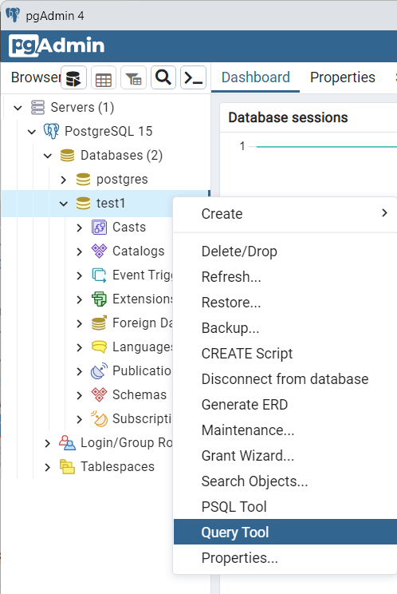
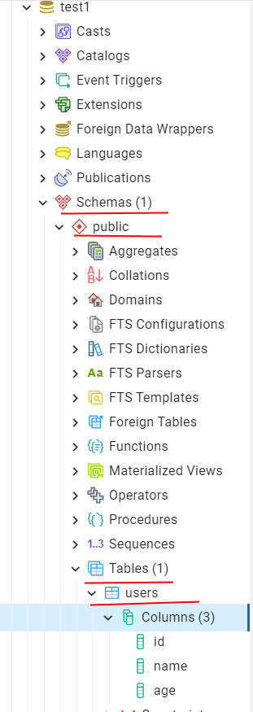
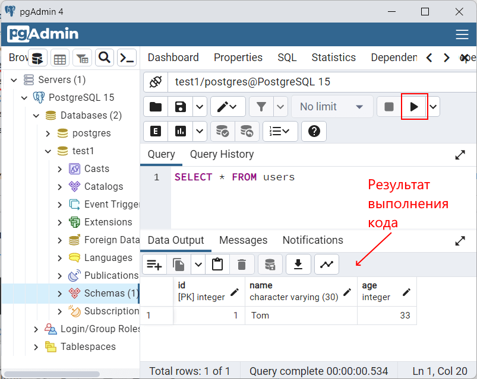

Вернуться на главную страницу →
Вернуться на главную страницу →
Запросы SQL в pgAdmin
Как правило, работа с базой данных осуществляется с помощью специального языка запросов - SQL. Рассмотрим, как выполнять простейшие SQL-запросы к базе данных в pgAdmin.
К примеру, возьмем базу данных test1, которая была создана в прошлой теме (или создадим новую) и добавим в нее таблицу и некоторые начальные данные. Для этого нажмем в правой части окна pgAdmin на базу данных правой кнопкой мыши и в появившемся контекстном меню выберем пункт Query Tool:
После этого в центральной части программы откроется поле для ввода кода SQL. Введем следующий набор выражений:
1 CREATE TABLE users
2 (
3 Id SERIALPRIMARY KEY,
4 Name CHARACTER VARYING(30),
5 AgeINTEGER
6 );
7 INSERT INTOusers (Name, Age)VALUES('Tom', 33);
Фактически весь код разбивается на две части. Первая часть - инструкция CREATE TABLE, которая создает таблицу users с тремя столбцами Id, Name и Age. И вторая часть - инструкция INSERT, которая добавляет в таблицу одну строку.
Чтобы выполнить данные инструкции, нажмем над кодом в панели инструментов на стрелочку. И после этого в выбранную базу данных (test1) будет добавлена таблица users, в которую будет добавлена одна строка.
Впоследствии подобным образом будет выполняться любой другой код SQL к базе данных. Также выбирается нужная база данных, выбирается параметр Query Tool, и далее в поле ввода вводится код SQL, который затем выполняется.
Следует отметить, что для каждой таблицы определяется схема. По умолчанию это схема "public". Поэтому чтобы найти таблицу, нам надо обратиться к узлу базы данных, раскрыть его, далее выбрать подузел Schemas, в нем подузел public (название схема), и далее в нем подузел Tables, который представляет все таблицы, ассоциированные со схемой public:
Теперь получим данные из таблицы, которые были добавлены при ее создании. Для этого выполним следующий код:
1 SELECT *FROMusers
И внизу программы в поле Data Output мы увидим в табличном представлении те данные, которые ранее были добавлены.
